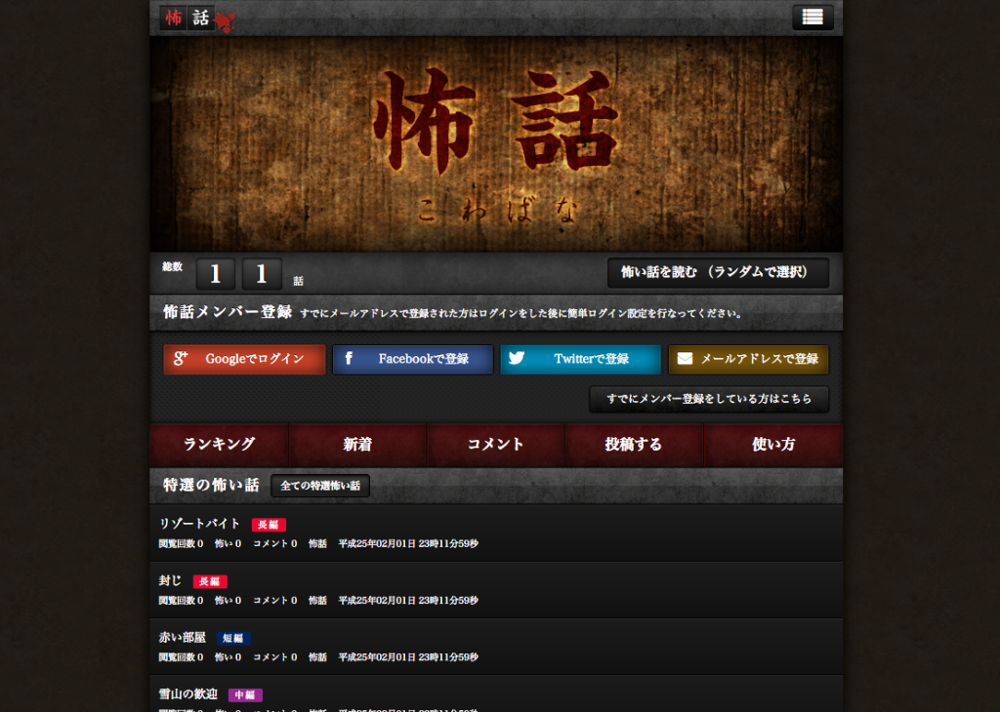

今週は作業週だったので作業の記録です。
自分のMacで怖話を立ち上げてる作業をしていきました。
github上の怖話のREADME.mdとインターンの@hrysdさん、@kumamidoriさん、@satokoさんの下記のブログ記事を参考に進めていきました。
構築前に、homebrewが入っている環境でrbenvでruby-1.9.3-p194とruby-1.9.3-p327をインストールだけしている状態からスタートしました。以下、手順です。
githubから怖話のリポジトリをローカルにcloneする
ターミナルからvimで.bashrcを開く
.bashrcに下記コード追記
ターミナルから.bashrc再読み込み
rbenvで指定しているrubyのバージョンを確認
怖話の構築に必要なのはruby-1.9.3-p327なのでp327に指定する
homebrewでimagemagick/mysql/qtをインストール
$ brew install imagemagick mysql qt
mySQLでDB作成
unset TMPDIR
mysql_install_db --verbose --user=`whoami` --basedir="$(brew --prefix mysql)" --datadir=/usr/local/var/mysql --tmpdir=/tmp
bundleインストール（bundle install コマンドを使うと、 Gemfile に書かれたgemは $GEM_HOME 以下にインストールされます）
ここでこけた。先にrbenvでruby-1.9.3-p327にバージョン指定していたけどエラー。
上記でやってもエラー。エラーメッセージのコピーし忘れた・・・。
rbenv versionではp327になってるがruby -vで確認するとp194の表示。
$ source ~/.bashrcで再読み込みすればruby -vでもp327になるけど、bundleが通らない。
ようわからんと思ってrvmでruby-1.9.3-p327をインストールした。
$ rvm install ruby-1.9.3-p327
再度bundlインストールして通る。
rakeする。
こけた。下記のエラーメッセージ。
rake aborted!
You have already activated rake 10.0.3, but your Gemfile requires rake 0.9.2.2. Using bundle exec may solve this.
rakeのバージョンが違うのでbundle execでrakeをやれと。
$ bundle exec rake kowabana:setup
今度はNokogiriでエラー。
WARNING: Nokogiri was built against LibXML version 2.7.3, but has dynamically loaded 2.7.8
というエラーメッセージが出る。
libxml2のバージョンは2.7.3だけど、nokogiriが読み込むのは2.7.8・・・。
libXMLとNokogiriを入れ直す。
$ brew install libxml2
$ gem install nokogiri -- --with-xml2-include=/usr/local/Cellar/li
再度bundleしようとしてmySQL起動するの忘れててエラー出てしまったので起動。
改めて$ bundle exec rake kowabana:setupを実行して、めでたくrakeされた。
最後にサーバー起動。
ブラウザでhttp://localhost:3000/にアクセスして、ローカルで起動しているのを確認。

できた！
以上です。
この辺の記事も参考にしながらやっていきました。

{kind=link}
{kind=link}
{kind=link}